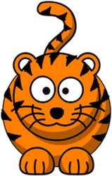

<!DOCTYPE html>
<html>
    <head>
        <title>Experiment</title>

        <script src="https://unpkg.com/jspsych@7.3.4"></script>
        <script src="https://unpkg.com/@jspsych/plugin-html-keyboard-response@1.1.3"></script>
        <script src="https://unpkg.com/@jspsych/plugin-html-button-response@1.1.3"></script>
        <script src="https://unpkg.com/@jspsych/plugin-call-function@1.1.3"></script>
        <script src="https://unpkg.com/@jspsych/plugin-fullscreen@1.1.0"></script>
        <script src="https://unpkg.com/@jspsych/plugin-instructions@1.1.0"></script>
        <script src="https://unpkg.com/@jspsych/plugin-preload@1.1.3"></script>


        <link href="https://unpkg.com/jspsych@7.3.4/css/jspsych.css" rel="stylesheet" type="text/css" />

        <script type="text/javascript" src="lib/vendors/jquery-2.2.0.min.js"></script>
        <script type="text/javascript" src="jspsych-7-pavlovia-2021.12.js"></script>
        <script type="text/javascript" src="pic_test_stimuli.js"></script>

        <style>
            :root {
                --canvas-width: 1250px;
                --canvas-height: 760px;

                --instr-text-width: 900px;

                --mc-width: 180px;
                --side-character-size: 100px;
                --trial-button-size: 120px;

                --side-character-img-top: 96px;

                --instr-stim-size: 600px;
                --instr-button-gap: 110px;

                --probability-face-size: 200px;

                --instr-video-width: 300px;
                --instr-video-height: 500px;

                --trial-stim-top: 190px;
                --left-stim-left: 80px;
                --right-stim-left: 740px;

                --instr-mc-top: 200px;
                --instr-mc-right: 160px;

                --prob-mc-top: 132px;
                --prob-mc-right: 100px;

                --instr-text-top: 114px;
                --prob-instr-text-top: 38px;

                --instr-stim-top: 90px;

                --trial-prompt-top: 850px;
            }

        /* main container */
        #jspsych-content {
            position: relative;
            width: var(--canvas-width);
            max-width: var(--canvas-width);
            min-height: var(--canvas-height);
            margin: 0 auto;
        }

    /* button layer */
    .trial-button-position #jspsych-html-button-response-btngroup {
        position: absolute;
        top: 0;
        left: 0;
        width: var(--canvas-width);
        height: var(--canvas-height);
        pointer-events: none;
    }

/* test trial button wrappers */
.trial-button-position #jspsych-html-button-response-btngroup .jspsych-html-button-response-button {
    position: absolute;
    width: var(--trial-button-size);
    height: var(--trial-button-size);
    margin: 0 !important;
    pointer-events: auto;
}

.trial-button-position
#jspsych-html-button-response-btngroup
.jspsych-html-button-response-button:nth-child(1) {
    left: 235px;
    top: 700px;
}

.trial-button-position
#jspsych-html-button-response-btngroup
.jspsych-html-button-response-button:nth-child(2) {
    left: 895px;
    top: 700px;
}

/* test trials */
.trial-layout {
    position: relative;
    width: var(--canvas-width);
    height: var(--canvas-height);
    margin: 0 auto;
    text-align: center;
}

.main-character {
    position: absolute;
    top: 30px;
    left: 50%;
    transform: translateX(-50%);
    width: var(--side-character-size);
    height: auto;
    z-index: 3;
}

.stim-container {
    position: absolute;
    top: var(--trial-stim-top);
    width: 450px;
    height: 700px;
    text-align: center;
}

.stim-container.left {
    left: var(--left-stim-left);
}

.stim-container.right {
    left: var(--right-stim-left);
}

.stim-rect {
    display: block;
    margin: 0 auto;
}

.side-character-container {
    position: relative;
    width: var(--trial-button-size);
    height: var(--trial-button-size);
    margin: 0 auto;
}

.side-character-img {
    position: absolute;
    top: var(--side-character-img-top);
    left: 50%;
    width: auto;
    height: auto;
    transform: translate(-50%, -50%);
    z-index: 2;
    pointer-events: none;
}

.side-character-btn {
    width: 100%;
    height: 100%;
    opacity: 0;
    background: transparent;
    border: none;
    box-shadow: none;
    padding: 0;
    margin: 0;
    cursor: pointer;
}

.trial-prompt {
    position: absolute;
    top: var(--trial-prompt-top);
    left: 50%;
    transform: translateX(-50%);
    width: 1000px;
    font-size: 28px;
    line-height: 1.4;
    text-align: center;
}

.stim-container.pulse-highlight {
    animation: yellowPulse 0.85s ease-in-out 1;
}

@keyframes yellowPulse {
    0% {
        box-shadow: 0 0 0 rgba(255, 230, 0, 0);
    }

50% {
    box-shadow: 0 0 35px 12px rgba(255, 230, 0, 0.9);
}

100% {
    box-shadow: 0 0 0 rgba(255, 230, 0, 0);
}
}

/* instruction trials */
.instr-layout {
    position: relative;
    width: var(--canvas-width);
    height: var(--canvas-height);
    margin: 0 auto;
    text-align: center;
}

.instr-main-character {
    position: absolute;
    top: var(--instr-mc-top);
    right: var(--instr-mc-right);
    width: var(--mc-width);
    height: auto;
}

.instr-text {
    position: absolute;
    top: var(--instr-text-top);
    left: 50%;
    transform: translate(-50%, -50%);
    width: var(--instr-text-width);
    text-align: center;
}

.instr-video {
    width: var(--instr-video-width);
    height: var(--instr-video-height);
}

.instr-stim-container {
    position: absolute;
    top: var(--instr-stim-top);
    left: 50%;
    width: var(--instr-stim-size);
    height: var(--instr-stim-size);
    transform: translateX(-50%);
}

.instr-stim-img {
    display: block;
    max-width: 100%;
    height: auto;
    margin: 0 auto;
}

.instr-side-character {
    display: block;
    width: var(--side-character-size);
    height: var(--side-character-size);
    margin: 12px auto 0 auto;
    pointer-events: none;
}

.subset-button-position #jspsych-html-button-response-btngroup {
    display: flex;
    flex-direction: row;
    justify-content: center;
    align-items: center;
    gap: var(--instr-button-gap);
    margin-top: -60px;
}

.subset-circle-button {
    width: 175px;
    height: 175px;
    border: 3px solid black;
    border-radius: 50%;
    cursor: pointer;
}

.subset-button-position
.jspsych-html-button-response-button:nth-child(1)
.subset-circle-button {
    background-color: orange;
}

.subset-button-position
.jspsych-html-button-response-button:nth-child(2)
.subset-circle-button {
    background-color: dodgerblue;
}

.subset-circle-button:hover {
    transform: scale(1.05);
}

/* probability instruction trials */
.prob-instr-text {
    position: absolute;
    top: var(--prob-instr-text-top);
    left: 50%;
    transform: translateX(-50%);
    width: var(--instr-text-width);
    text-align: center;
}

.prob-instr-main-character {
    position: absolute;
    top: var(--prob-mc-top);
    right: var(--prob-mc-right);
    width: var(--mc-width);
    height: auto;
}

.prob-instr-side-character {
    display: block;
    width: var(--side-character-size);
    height: var(--side-character-size);
    margin: 7px auto 0 auto;
    pointer-events: none;
}

.prob-instr-helper {
    margin-top: 8px;
    font-size: 20px;
    line-height: 1.4;
}

.yes-no-button-position #jspsych-html-button-response-btngroup {
    position: relative;
    z-index: 10;
    display: flex;
    flex-direction: row;
    justify-content: center;
    align-items: center;
    gap: var(--instr-button-gap);
    margin-top: -80px;
}

.probability-face-button {
    position: relative;
    z-index: 11;
    background: transparent;
    border: none;
    padding: 0;
    cursor: pointer;
}

.probability-face-img {
    width: var(--probability-face-size);
    height: var(--probability-face-size);
    object-fit: contain;
    pointer-events: none;
}

.yes-no-button-position
.jspsych-html-button-response-button:nth-child(1)
.probability-face-img {
    content: url("img/probability_instructions/happy_face.png");
}

.yes-no-button-position
.jspsych-html-button-response-button:nth-child(2)
.probability-face-img {
    content: url("img/probability_instructions/sad_face.png");
}

.probability-face-button:hover {
    transform: scale(1.05);
}


/* party transitions */
.party-transition-layout {
    position: fixed;
    top: 0;
    left: 0;
    width: 100vw;
    height: 100vh;
    overflow: hidden;
    background: black;
    z-index: 9999;
}

.party-transition-video {
    width: 100vw;
    height: 100vh;
    object-fit: contain;
    background: black;
}

.party-transition-text {
    position: absolute;
    left: 50%;
    bottom: 150px;
    transform: translateX(-50%);
    width: 950px;
    padding: 22px 28px;
    color: white;
    background: rgba(0, 0, 0, 0.65);
    border-radius: 18px;
    font-size: 20px;
    font-weight: bold;
    line-height: 1.35;
    text-align: center;
    visibility: hidden;
    z-index: 10000;
}

.delayed-instruction-text {
    visibility: hidden;
}

/* locking audios */
.audio-locked #jspsych-instructions-next,
.audio-locked #jspsych-html-button-response-btngroup button {
    pointer-events: none;
    opacity: 0.5;
}

.audio-locked #jspsych-html-button-response-btngroup,
.audio-locked #jspsych-html-button-response-btngroup .jspsych-html-button-response-button,
.audio-locked #jspsych-html-button-response-btngroup button {
    pointer-events: none !important;
}
</style>
<head>

    <body></body>

    <script>
    // need to initialize jsPsych and the timeline, which will control the actual experiment
    var timeline = [];
    var jsPsych = initJsPsych({
        show_progress_bar: false,
    });

// trial-level variables
var trialIndex = 0;
var curTrial = "temp";
var block = 0; // 0 = first format block, 1 = second format block
var left_stim = "temp";
var right_stim = "temp";
var left_path = "temp";
var right_path = "temp";
var trialIndexType = "test"; // fix to add instruction

// preload audios 
var preload_audio = [
"audios/introduction_party.wav",
"audios/click_instructions.wav",
"audios/block_transition.wav",
"audios/practice_transition.wav",
"audios/left_prompt.wav",
"audios/right_prompt.wav",
"audios/probability/task_introduction.wav",
"audios/mixture/task_introduction.wav",
"audios/sharing/task_introduction.wav",
"audios/probability/task_prompt.wav",
"audios/mixture/task_prompt.wav",
"audios/sharing/task_prompt.wav",
"audios/mixture/introducing_parts.wav",
"audios/probability/demo1_transition.wav",
"audios/sharing/demo1_transition.wav",
"audios/probability/identifyingparts_orange.wav",
"audios/mixture/identifyingparts_orange.wav",
"audios/sharing/identifyingparts_orange.wav",
"audios/probability/correct_feedback_orange.wav",
"audios/probability/incorrect_feedback_orange.wav",
"audios/mixture/correct_feedback_orange.wav",
"audios/mixture/incorrect_feedback_orange.wav",
"audios/sharing/correct_feedback_orange.wav",
"audios/sharing/incorrect_feedback_orange.wav",
"audios/probability/demo2_transition.wav",
"audios/probability/identifyingparts_blue.wav",
"audios/mixture/identifyingparts_blue.wav",
"audios/sharing/identifyingparts_blue.wav",
"audios/probability/correct_feedback_blue.wav",
"audios/probability/incorrect_feedback_blue.wav",
"audios/probability/click_instructions.wav",
"audios/mixture/correct_feedback_blue.wav",
"audios/mixture/incorrect_feedback_blue.wav",
"audios/sharing/correct_feedback_blue.wav",
"audios/sharing/incorrect_feedback_blue.wav",
"audios/sharing/click_instructions.wav",
"audios/probability/block1_transition.wav",
"audios/sharing/block1_transition.wav",
"audios/mixture/block1_transition.wav",
"audios/mixture/click_instructions.wav",
"audios/probability/block2_transition.wav",
"audios/mixture/block2_transition.wav",
"audios/sharing/block2_transition.wav",
"audios/sharing/demo.wav",
];

// preload animal imgs
var trial_img = [
"img/tiger.png",
"img/party_tiger.png",
"img/elephant.png",
"img/animals/dog.png",
"img/animals/lion.png",
"img/animals/moose.png",
"img/animals/hummingbird.png",
"img/animals/sloth.png",
"img/animals/monkey.png",
"img/animals/leopard.png",
"img/animals/turtle.png",
"img/animals/wolf.png",
"img/animals/octopus.png",
"img/animals/penguin.png",
"img/animals/parrot.png",
"img/animals/cow.png",
"img/animals/dolphin.png",
"img/animals/hippo.png",
"img/animals/frog.png",
"img/animals/polarbear.png",
"img/animals/shark.png",
"img/animals/squirrel.png",
"img/animals/beaver.png",
"img/animals/bear.png",
"img/animals/bat.png",
"img/animals/seagull.png",
"img/animals/bluewhale.png",
"img/animals/seahorse.png",
"img/animals/fox.png",
"img/animals/narwhal.png",
"img/animals/zebra.png",
"img/animals/fish.png",
"img/animals/giraffe.png",
"img/animals/bluejay.png",
"img/animals/starfish.png",
];

// preload test stimuli by format for each block
function getStimPath(stimList, formatCondition) {
    var paths = [];

    stimList.forEach(function (trial) {
        paths.push(
        "StimFiles_test/" +
        formatCondition +
        "_" +
        participantBottomColor +
        "_bottom_" +
        trial.opt1_stim +
        ".png",
    );

    paths.push(
    "StimFiles_test/" +
    formatCondition +
    "_" +
    participantBottomColor +
    "_bottom_" +
    trial.opt2_stim +
    ".png",
);
});

return paths;
}

// preload format-specific instruction stim
var instructions_img = [
"img/format_instructions/ContRectInt_blue_bottom_7_7.png",
"img/format_instructions/ContRectInt_orange_bottom_7_7.png",
"img/format_instructions/DivRectInt_blue_bottom_7_7.png",
"img/format_instructions/DivRectInt_orange_bottom_7_7.png",
];

// preload sharing-specific assets
var sharing_img = ["img/sharing_instructions/sharing_total.png"];

var probability_img = [
"img/probability_instructions/happy_face.png",
"img/probability_instructions/sad_face.png",
];

// preload probability-specific assets
var probability_videos = [
"videos/probability_instructions/ContRectInt_blue_bottom_7_7_orange.mp4",
"videos/probability_instructions/ContRectInt_blue_bottom_7_7_blue.mp4",
"videos/probability_instructions/ContRectInt_orange_bottom_7_7_orange.mp4",
"videos/probability_instructions/ContRectInt_orange_bottom_7_7_blue.mp4",
"videos/probability_instructions/DivRectInt_blue_bottom_7_7_orange.mp4",
"videos/probability_instructions/DivRectInt_blue_bottom_7_7_blue.mp4",
"videos/probability_instructions/DivRectInt_orange_bottom_7_7_orange.mp4",
"videos/probability_instructions/DivRectInt_orange_bottom_7_7_blue.mp4",
];


// preload party transition videos shown after every 4 test trials
var party_transition_videos = [
    "videos/party_transitions/party_hats.mp4",
    "videos/party_transitions/balloons.mp4",
    "videos/party_transitions/banner.mp4",
    "videos/party_transitions/cups_and_plates.mp4",
    "videos/party_transitions/party_favors.mp4",
    "videos/party_transitions/speaker.mp4",
    "videos/party_transitions/cake.mp4",
    "videos/party_transitions/ending.mp4",
];

var partyTransitionIndex = 0;

var parent_introduction = [
    "videos/introduction.mp4"
];


// setting the task conditions
var taskConditions = ["probability", "mixture", "sharing"];
var myConditionNumber = Math.floor(Math.random() * 3);
var myCondition = taskConditions[myConditionNumber];

// setting the format order
var orderConditions = ["continuousFirst", "discretizedFirst"];
var myOrderNumber = Math.floor(Math.random() * 2);
var myOrder = orderConditions[myOrderNumber];

// setting the subset order
var bottomColorConditions = ["orange", "blue"];
var bottomColorNumber = Math.floor(Math.random() * 2);
var participantBottomColor = bottomColorConditions[bottomColorNumber];

// set the blocks and formats for each participant using random assignment
var ratio_tasks =
myOrder == "continuousFirst"
? [
{
    condition: "ContRectInt",
    stim_pngs: "ContRectInt",
    disccont: "continuous",
    reg: "regular",
},
{
    condition: "DivRectInt",
    stim_pngs: "DivRectInt",
    disccont: "discretized",
    reg: "regular",
},
]
: [
{
    condition: "DivRectInt",
    stim_pngs: "DivRectInt",
    disccont: "discretized",
    reg: "regular",
},
{
    condition: "ContRectInt",
    stim_pngs: "ContRectInt",
    disccont: "continuous",
    reg: "regular",
},
];

// adding this information for every trial in datafile
jsPsych.data.addProperties({
    condition: myCondition,
    bottom_color: participantBottomColor,
});

// save data locally
var save_data = {
    type: jsPsychCallFunction,
    func: function () {
        var study_date = jsPsych.getStartTime().toISOString().slice(0, 10);
        var curFormat = ratio_tasks[ratio_loop].condition;
        var datafile = "data_" + myCondition + "_" + curFormat + "_" + myOrder + "_" + study_date + ".csv";

        jsPsych.data.get().localSave("csv", datafile);
    },
};

// message to appear at end of task
var task_end = {
    type: jsPsychHtmlKeyboardResponse,
    stimulus: `
    <div style="
    position: absolute;
    top: 50%;
    left: 50%;
    transform: translate(-50%, -50%);
    width: 800px;
    text-align: center;
    font-size: 28px;
    line-height: 1.4;
    ">
    Great Job!!!
</div>
`,
choices: ` `,
};

// shuffle is the Fisher-Yates (aka Knuth) Shuffle
function shuffle(array) {
    let currentIndex = array.length,
    randomIndex;

    while (currentIndex != 0) {
        randomIndex = Math.floor(Math.random() * currentIndex);
        currentIndex--;

        [array[currentIndex], array[randomIndex]] = [array[randomIndex], array[currentIndex]];
    }

return array;
}

//setting the color counterbalance
var numColor = "orange";
var otherColor = "blue";

// adding accuracy information to the stimulus lists
Object.keys(stim_block_1).forEach((key) => {
    stim_block_1[key].leftProp =
    (stim_block_1[key].opt1_stim.split("_")[0] * 1) /
    (stim_block_1[key].opt1_stim.split("_")[0] * 1 + stim_block_1[key].opt1_stim.split("_")[1] * 1);

    stim_block_1[key].rightProp =
    (stim_block_1[key].opt2_stim.split("_")[0] * 1) /
    (stim_block_1[key].opt2_stim.split("_")[0] * 1 + stim_block_1[key].opt2_stim.split("_")[1] * 1);

    if (stim_block_1[key].leftProp > stim_block_1[key].rightProp) {
        stim_block_1[key].correct_response = "left";
    } else if (stim_block_1[key].rightProp > stim_block_1[key].leftProp) {
        stim_block_1[key].correct_response = "right";
    }
});

// adding accuracy information to the stimulus lists
Object.keys(stim_block_2).forEach((key) => {
    stim_block_2[key].leftProp =
    (stim_block_2[key].opt1_stim.split("_")[0] * 1) /
    (stim_block_2[key].opt1_stim.split("_")[0] * 1 + stim_block_2[key].opt1_stim.split("_")[1] * 1);

    stim_block_2[key].rightProp =
    (stim_block_2[key].opt2_stim.split("_")[0] * 1) /
    (stim_block_2[key].opt2_stim.split("_")[0] * 1 + stim_block_2[key].opt2_stim.split("_")[1] * 1);

    if (stim_block_2[key].leftProp > stim_block_2[key].rightProp) {
        stim_block_2[key].correct_response = "left";
    } else if (stim_block_2[key].rightProp > stim_block_2[key].leftProp) {
        stim_block_2[key].correct_response = "right";
    }
});

// pool of side character pairs assigned uniquely across trials
var animalPool = [
"dog",
"lion",
"moose",
"hummingbird",
"sloth",
"monkey",
"leopard",
"turtle",
"wolf",
"octopus",
"penguin",
"parrot",
"cow",
"dolphin",
"hippo",
"frog",
"polarbear",
"shark",
"squirrel",
"beaver",
"bear",
"bat",
"seagull",
"bluewhale",
"seahorse",
"fox",
"narwhal",
"zebra",
"fish",
"giraffe",
"bluejay",
"starfish",
];

// shuffle test stimuli
shuffle(stim_block_1);
shuffle(stim_block_2);

// shuffle side character pairs
var shuffledAnimals = shuffle(animalPool.slice());

// combine both blocks and assign unique animals across the whole task
var allTrials = stim_block_1.concat(stim_block_2);

allTrials.forEach(function (trial, i) {
    trial.animal = shuffledAnimals[i];
});

// choose task-specific click instruction audio for instruction trials 
function getClickInstructionsAudio() {
    if (myCondition == "probability") {
        return "audios/probability/click_instructions.wav";
    } else if (myCondition == "mixture") {
        return "audios/mixture/click_instructions.wav";
    } else if (myCondition == "sharing") {
        return "audios/sharing/click_instructions.wav";
    }

return "";
}

// prompts based on task condition
function getCurPrompt() {
    if (myCondition == "probability") {
        return "audios/probability/task_prompt.wav";
    } else if (myCondition == "mixture") {
        return "audios/mixture/task_prompt.wav";
    } else if (myCondition == "sharing") {
        return "audios/sharing/task_prompt.wav";
    }

return "";
}

// create test trials, building the current test trial from the active stimulus block
function getCurTrial() {
    var curList;

    if (ratio_loop == 0) {
        curList = stim_block_1;
    }

if (ratio_loop == 1) {
    curList = stim_block_2;
}

curTrial = curList[trialIndex];

left_stim = curTrial.opt1_stim;
right_stim = curTrial.opt2_stim;

var bottomColor = participantBottomColor;

left_path = "StimFiles_test/" + curCondition + "_" + bottomColor + "_bottom_" + left_stim + ".png";
right_path = "StimFiles_test/" + curCondition + "_" + bottomColor + "_bottom_" + right_stim + ".png";

var curAnimal = curTrial.animal;
var curSideCharacter = String(curAnimal).trim().replace(".png", "").replace(" ", "");

var animal_path = "img/animals/" + curSideCharacter + ".png";

return {
    left_path: left_path,
    right_path: right_path,
    animal_path: animal_path,
    preload_audio: getCurPrompt(),
    correct_response: curTrial.correct_response,
};
}

// defining HTML for the current test trial
function buildTestStim() {
    var trialData = getCurTrial();

    return `
    <div class="trial-layout">

        

        <div id="left-stim-container" class="stim-container left">
            

            <div class="side-character-container">
                
            </div>
    </div>

<div id="right-stim-container" class="stim-container right">
    

    <div class="side-character-container">
        
    </div>
</div>

<div class="trial-prompt"></div>`;
}

// instruction img based on format order and subset order
function getInstructionImg(blockNumber) {
    var formatCondition = ratio_tasks[blockNumber].condition;
    return "img/format_instructions/" + formatCondition + "_" + participantBottomColor + "_bottom_7_7.png";
}

// create instruction trials
function buildInstrStim(audioPath, blockNumber, textInstruction) {
    var instructionImg = getInstructionImg(blockNumber);

    return `
    <div class="instr-layout">
        <div class="instr-text">
            ${createAudioPrompt(audioPath, getClickInstructionsAudio())}

            <p style="font-size: 20px; line-height: 1.4; margin-top: 8px;">
                ${textInstruction}
            </p>
    </div>


<div class="instr-stim-container">
    
    
</div>
</div>
`;
}

// convert color label to numerator subset location for instruction trials
function getInstrFormat(colorName) {
    if (participantBottomColor === colorName) {
        return "bottom";
    } else {
        return "top";
    }
}

// choose probability demo for current format and condition
function getProbabilityInstrDemo(blockNumber, landedColor) {
    var formatCondition = ratio_tasks[blockNumber].condition;

    return (
    "videos/probability_instructions/" +
    formatCondition +
    "_" +
    participantBottomColor +
    "_bottom_7_7_" +
    landedColor +
    ".mp4"
);
}

// switch button-positioning classes for each trial type
function setButtonLayoutClass(className) {
    var content = document.querySelector("#jspsych-content");

    content.classList.remove("trial-button-position", "subset-button-position", "yes-no-button-position");

    if (className) {
        content.classList.add(className);
    }
}

// define HTML for probability instruction trials
function buildProbabilityInstrTrial(audioPath, blockNumber, landedColor, textInstruction) {
    var videoPath = getProbabilityInstrDemo(blockNumber, landedColor);

    return `
    <div class="instr-layout">
        <div class="prob-instr-text">
            ${createAudioPrompt(audioPath, null, true)}

            <p class="prob-instr-helper">
                ${textInstruction}
            </p>

        <video
        id="probability-demo-video"
        controls
        preload="auto"
        class="instr-video"
        onended="finishProbabilityDemoAudio()"
        >
        <source src="${videoPath}" type="video/mp4">
        </video>

    
    
</div>
</div>
`;
}

// instruction feedback per task condition
function makeInstructionFeedback(correctAudio, incorrectAudio) {
    return {
        type: jsPsychHtmlKeyboardResponse,
        stimulus: function () {
            var last = jsPsych.data.get().last(1).values()[0];
            var feedbackAudio = last.correct ? correctAudio : incorrectAudio;

            return `
            <div style="text-align: center; margin-top: 240px;">
                
                ${createAudioPrompt(feedbackAudio)}
                <p class="delayed-instruction-text" style="font-size: 20px; line-height: 1.4; margin-top: 10px;">
                    Parents, please press the spacebar to proceed with the instructions.
                </p>
        </div>
    `;
},
choices: " ",
on_load: function () {
    var wrapper = document.querySelector(".audio-prompt-wrapper");
    var text = document.querySelector(".delayed-instruction-text");
    var audioPath = wrapper ? wrapper.getAttribute("data-audio-path") : "";

    if (audioPath) {
        playInstructionAudioFile(audioPath, function () {
            if (text) {
                text.style.visibility = "visible";
            }
    });
}
},
on_finish: function (data) {
    var last = jsPsych.data.get().last(2).values()[0];
    data.event = "instruction_feedback";
    data.instr_trial_accuracy = last.correct;
},
};
}

// invisible button for test trials
var hidden_button_html = `
<button class="side-character-btn" aria-label="%choice%">%choice%</button>
`;

// mixture task instruction trials: identify numerator
var mixture_check_orange_block1 = {
    type: jsPsychHtmlButtonResponse,
    stimulus: function () {
        return buildInstrStim("audios/mixture/identifyingparts_orange.wav", 0, "");
    },
choices: ["num", "other"],
button_html: '<button class="subset-circle-button" aria-label="%choice%"></button>',
response_ends_trial: true,
on_load: function () {
    setButtonLayoutClass("subset-button-position");
    playCurrentInstructionAudio();
},
on_finish: function (data) {
    setButtonLayoutClass(null);

    var correctSubset = "num";

    data.event = "instruction_check";
    data.instruction_question = "Which color is the sweet oranges?";
    data.instruction_target_color = "orange";
    data.response_subset = data.response === 0 ? "num" : "other";
    data.correct_subset = correctSubset;
    data.correct = data.response_subset === correctSubset;
    data.block = 0;
    data.format = ratio_tasks[0].disccont;
    data.bottom_color = participantBottomColor;
},
};

// mixture task instruction trials: identify other subset
var mixture_check_blue_block1 = {
    type: jsPsychHtmlButtonResponse,
    stimulus: function () {
        return buildInstrStim("audios/mixture/identifyingparts_blue.wav", 0, "");
    },
choices: ["num", "other"],
button_html: '<button class="subset-circle-button" aria-label="%choice%"></button>',
response_ends_trial: true,
on_load: function () {
    setButtonLayoutClass("subset-button-position");
    playCurrentInstructionAudio();
},
on_finish: function (data) {
    setButtonLayoutClass(null);

    var correctSubset = "other";

    data.event = "instruction_check";
    data.instruction_question = "Which color is water?";
    data.instruction_target_color = "blue";
    data.response_subset = data.response === 0 ? "num" : "other";
    data.correct_subset = correctSubset;
    data.correct = data.response_subset === correctSubset;
    data.block = 0;
    data.format = ratio_tasks[0].disccont;
    data.bottom_color = participantBottomColor;
},
};

// probability task instruction trials: identify numerator
var probability_check_orange_block1 = {
    type: jsPsychHtmlButtonResponse,
    stimulus: function () {
        return buildProbabilityInstrTrial("audios/probability/demo1_transition.wav", 0, "orange", "");
    },
choices: ["yes", "no"],
button_html: `
<button class="probability-face-button" aria-label="%choice%">
    
</button>
`,
response_ends_trial: true,
on_load: function () {
    setButtonLayoutClass("yes-no-button-position");
    setAudioLock(true);
    playCurrentInstructionAudio();
},
on_finish: function (data) {
    setButtonLayoutClass(null);

    var correctAnswer = "yes";

    data.event = "instruction_check";
    data.instruction_question = "Look! The arrow landed on orange! Did Tiger win? ";
    data.instruction_target_color = "orange";
    data.response_answer = data.response === 0 ? "yes" : "no";
    data.correct_answer = correctAnswer;
    data.correct = data.response_answer === correctAnswer;
    data.block = 0;
    data.format = ratio_tasks[0].disccont;
    data.bottom_color = participantBottomColor;
},
};

// probability task instruction trials: identify other subset
var probability_check_blue_block1 = {
    type: jsPsychHtmlButtonResponse,
    stimulus: function () {
        return buildProbabilityInstrTrial("audios/probability/demo2_transition.wav", 0, "blue", "");
    },
choices: ["yes", "no"],
button_html: `
<button class="probability-face-button" aria-label="%choice%">
    
</button>
`,
margin_vertical: "0px",
margin_horizontal: "0px",
response_ends_trial: true,
on_load: function () {
    setButtonLayoutClass("yes-no-button-position");
    setAudioLock(true);
    playCurrentInstructionAudio();
},
on_finish: function (data) {
    setButtonLayoutClass(null);

    var correctAnswer = "no";

    data.event = "instruction_check";
    data.instruction_question = "Look! The arrow landed on blue! Did Tiger win?";
    data.instruction_target_color = "blue";
    data.response_answer = data.response === 0 ? "yes" : "no";
    data.correct_answer = correctAnswer;
    data.correct = data.response_answer === correctAnswer;
    data.block = 0;
    data.format = ratio_tasks[0].disccont;
    data.bottom_color = participantBottomColor;
},
};

// sharing task instruction trials: identify numerator
var sharing_check_orange_block1 = {
    type: jsPsychHtmlButtonResponse,
    stimulus: function () {
        return buildInstrStim("audios/sharing/identifyingparts_orange.wav", 0, "");
    },
choices: ["num", "other"],
button_html: '<button class="subset-circle-button" aria-label="%choice%"></button>',
response_ends_trial: true,
on_load: function () {
    setButtonLayoutClass("subset-button-position");
    playCurrentInstructionAudio();
},
on_finish: function (data) {
    setButtonLayoutClass(null);

    var correctSubset = "num";

    data.event = "instruction_check";
    data.instruction_question = "Which color stuff did Elephant share with Tiger?";
    data.instruction_target_color = "orange";
    data.response_subset = data.response === 0 ? "num" : "other";
    data.correct_subset = correctSubset;
    data.correct = data.response_subset === correctSubset;
    data.block = 0;
    data.format = ratio_tasks[0].disccont;
    data.bottom_color = participantBottomColor;
},
};

// sharing task instruction trials: identify other subset
var sharing_check_blue_block1 = {
    type: jsPsychHtmlButtonResponse,
    stimulus: function () {
        return buildInstrStim("audios/sharing/identifyingparts_blue.wav", 0, "");
    },
choices: ["num", "other"],
button_html: '<button class="subset-circle-button" aria-label="%choice%"></button>',
response_ends_trial: true,
on_load: function () {
    setButtonLayoutClass("subset-button-position");
    playCurrentInstructionAudio();
},
on_finish: function (data) {
    setButtonLayoutClass(null);

    var correctSubset = "other";

    data.event = "instruction_check";
    data.instruction_question = "Which color stuff did Elephant keep?";
    data.instruction_target_color = "blue";
    data.response_subset = data.response === 0 ? "num" : "other";
    data.correct_subset = correctSubset;
    data.correct = data.response_subset === correctSubset;
    data.block = 0;
    data.format = ratio_tasks[0].disccont;
    data.bottom_color = participantBottomColor;
},
};

// choosing feedback audios by task condition for instruction trials
var probability_feedback_orange = makeInstructionFeedback(
"audios/probability/correct_feedback_orange.wav",
"audios/probability/incorrect_feedback_orange.wav",
);

var probability_feedback_blue = makeInstructionFeedback(
"audios/probability/correct_feedback_blue.wav",
"audios/probability/incorrect_feedback_blue.wav",
);

var mixture_feedback_orange = makeInstructionFeedback(
"audios/mixture/correct_feedback_orange.wav",
"audios/mixture/incorrect_feedback_orange.wav",
);

var mixture_feedback_blue = makeInstructionFeedback(
"audios/mixture/correct_feedback_blue.wav",
"audios/mixture/incorrect_feedback_blue.wav",
);

var sharing_feedback_orange = makeInstructionFeedback(
"audios/sharing/correct_feedback_orange.wav",
"audios/sharing/incorrect_feedback_orange.wav",
);

var sharing_feedback_blue = makeInstructionFeedback(
"audios/sharing/correct_feedback_blue.wav",
"audios/sharing/incorrect_feedback_blue.wav",
);

// adding blank screen b/w each test trial
var white_screen = {
    type: jsPsychHtmlKeyboardResponse,
    stimulus: `
    <div style="width: 100vw; height: 100vh; background: white;"></div>
    `,
    choices: "NO_KEYS",
    trial_duration: 1200,
    data: {
        event: "white_screen",
    },
};


// choose the next party transition video in the fixed order
function getCurrentPartyTransitionVideo() {
    return party_transition_videos[partyTransitionIndex];
}

// party transition video shown after every 4 test trials
var party_transition_video = {
    type: jsPsychHtmlKeyboardResponse,
    stimulus: function () {
        var videoPath = getCurrentPartyTransitionVideo();

        return `
        <div class="party-transition-layout">
            <video
                id="party-transition-video"
                class="party-transition-video"
                autoplay
                playsinline
                preload="auto"
            >
                <source src="${videoPath}" type="video/mp4">
            </video>

            <div id="party-transition-text" class="party-transition-text">
                Parents, please press the spacebar to proceed to the next part of the experiment
            </div>
        </div>
        `;
    },
    choices: " ",
    data: function () {
        return {
            event: "party_transition_video",
            party_transition_number: partyTransitionIndex + 1,
            party_transition_video: getCurrentPartyTransitionVideo(),
        };
    },
    on_load: function () {
        lockAudio();

        var video = document.getElementById("party-transition-video");
        var text = document.getElementById("party-transition-text");
        var hasFinished = false;

        function finishVideo() {
            if (hasFinished) {
                return;
            }

            hasFinished = true;

            if (text) {
                text.style.visibility = "visible";
            }

            unlockAudio();
        }

        if (video) {
            video.onended = finishVideo;
            video.onerror = finishVideo;

            var playPromise = video.play();

            if (playPromise && typeof playPromise.catch === "function") {
                playPromise.catch(function () {
                    finishVideo();
                });
            }
        } else {
            finishVideo();
        }
    },
    on_finish: function (data) {
        data.party_transition_completed = true;
        partyTransitionIndex++;
    },
};

// only show a party transition after trial 4, 8, 12, and 16 in each test block
var party_transitions= {
    timeline: [party_transition_video],
    conditional_function: function () {
        return trialIndex > 0 && trialIndex % 4 === 0 && partyTransitionIndex < party_transition_videos.length;
    },
};

// test trial
var stim_display = {
    type: jsPsychHtmlButtonResponse,
    stimulus: function () {
        return buildTestStim();
    },
choices: ["left", "right"],
button_html: hidden_button_html,
margin_vertical: "0px",
margin_horizontal: "0px",
response_ends_trial: true,
trial_duration: null,

on_load: function () {
    setButtonLayoutClass("trial-button-position");

    var trialData = getCurTrial();

    var leftContainer = document.querySelector("#left-stim-container");
    var rightContainer = document.querySelector("#right-stim-container");

    setAudioLock(true);

    playAudioFile(trialData.preload_audio, function () {
        leftContainer.classList.add("pulse-highlight");

        playAudioFile("audios/left_prompt.wav", function () {
            leftContainer.classList.remove("pulse-highlight");

            rightContainer.classList.add("pulse-highlight");

            playAudioFile("audios/right_prompt.wav", function () {
                rightContainer.classList.remove("pulse-highlight");

                playAudioFile("audios/click_instructions.wav", function () {
                    setAudioLock(false);
                });
        });
});
});
},

on_finish: function (data) {
    setButtonLayoutClass(null);

    var trialData = getCurTrial();

    data.event = "display_stim";
    data.task = myCondition;
    data.format_order = myOrder;
    data.block = block;
    data.trial_number = trialIndex + 1;
    data.left_stim = left_stim;
    data.num_color = numColor;
    data.right_stim = right_stim;
    data.left_path = left_path;
    data.right_path = right_path;
    data.format = ratio_tasks[ratio_loop].disccont;
    data.trial_index = trialIndexType;
    data.bottom_color = participantBottomColor;
    data.response_side = data.response === 0 ? "left" : "right";
    data.correct = data.response_side == trialData.correct_response;

    trialIndex++;
},
};

var enter_fullscreen = {
    type: jsPsychFullscreen,
    fullscreen_mode: true,
    message: `
    <div style="
    display: flex;
    flex-direction: column;
    align-items: center;
    text-align: center;
    font-size: 20px;
    line-height: 1.5;
    margin-top: 250px;
    ">
    <p style="max-width: 900px;">
        Welcome!
        <br><br>
        Please ensure you are using an appropriate computer and browser, then press continue to start.
        <br><br>
        Your browser will enter fullscreen mode when you start.
    </p>
</div>
`,
};

timeline.push(enter_fullscreen);

// preload by task condition
var preload_img = trial_img.slice().concat(instructions_img);
var preload_video = [];

if (myCondition == "sharing") {
    preload_img = preload_img.concat(sharing_img);
}

if (myCondition == "probability") {
    preload_img = preload_img.concat(probability_img);
}

if (myCondition == "probability") {
    preload_video = preload_video.concat(probability_videos);
}

preload_video = preload_video.concat(party_transition_videos);

preload_video = preload_video.concat(parent_introduction);

var test_img = []
.concat(getStimPath(stim_block_1, ratio_tasks[0].condition))
.concat(getStimPath(stim_block_2, ratio_tasks[1].condition));

preload_img = preload_img.concat(test_img);

var preload = {
    type: jsPsychPreload,
    images: preload_img,
    videos: preload_video,
    audio: preload_audio,
    message: "Please wait for the experiment to load",
};

timeline.push(preload);

var audioLockCount = 0;
var instructionAudio = null;
var lastInstructionAudio = null;

// manage clickability controls while audio is playing
function setAudioLock(isLocked) {
    var content = document.querySelector("#jspsych-content");

    if (content) {
        content.classList.toggle("audio-locked", isLocked);
    }

var nextButton = document.querySelector("#jspsych-instructions-next");

if (nextButton) {
    nextButton.disabled = isLocked;
}

var responseButtons = document.querySelectorAll(
"#jspsych-html-button-response-btngroup button"
);

responseButtons.forEach(function (button) {
    button.disabled = isLocked;
});

var responseWrappers = document.querySelectorAll(
"#jspsych-html-button-response-btngroup .jspsych-html-button-response-button"
);

responseWrappers.forEach(function (wrapper) {
    wrapper.style.pointerEvents = isLocked ? "none" : "auto";
});
}

// disable participant's response while audio/video is still playing
function lockAudio() {
    audioLockCount++;
    setAudioLock(true);
}

// re-enable participant's response after audio/video finishes
function unlockAudio() {
    audioLockCount = Math.max(0, audioLockCount - 1);

    if (audioLockCount === 0) {
        setAudioLock(false);
    }
}

document.addEventListener(
    "keydown",
    function (event) {

        if (audioLockCount > 0 && event.code === "Space") {
            event.preventDefault();
            event.stopImmediatePropagation();
        }
    },
    true,
);

// audio/video playback instructions 
function createAudioPrompt(audioPath, nextAudioPath, playVideoAfter) {
    return `
    <div
    class="audio-prompt-wrapper"
    data-audio-path="${audioPath}"
    data-next-audio-path="${nextAudioPath || ""}"
    data-play-video-after="${playVideoAfter ? "true" : "false"}"
    style="text-align: center; margin-top: 20px;"
    ></div>
    `;
}

// play audio and manage controls for instruction trials
function playAudioFile(audioPath, onEnded) {
    var audio = new Audio(audioPath);
    var hasEnded = false;

    function finishAudio() {
        if (hasEnded) {
            return;
        }

    hasEnded = true;

    if (onEnded) {
        onEnded();
    }
}

audio.preload = "auto";
audio.playsInline = true;
audio.onended = finishAudio;
audio.onerror = finishAudio;

var playPromise = audio.play();

if (playPromise && typeof playPromise.catch === "function") {
    playPromise.catch(function () {
        finishAudio();
    });
}

return audio;
}

// play instruction audio while keeping the page locked so participants can't interact with the experiment until it finishes
function playInstructionAudioFile(audioPath, onEnded) {
    lockAudio();

    playAudioFile(audioPath, function () {
        unlockAudio();

        if (onEnded) {
            onEnded();
        }
});
}

// play click instructions after the probability demo video ends
function finishProbabilityDemoAudio() {
    playInstructionAudioFile(getClickInstructionsAudio(), function () {
        setAudioLock(false);
    });
}

// find the current instruction page audio wrapper and start the correct audio sequence
function playCurrentInstructionAudio() {
    var wrapper = document.querySelector(".audio-prompt-wrapper");

    if (!wrapper) {
        return;
    }

var audioPath = wrapper.getAttribute("data-audio-path");
var nextAudioPath = wrapper.getAttribute("data-next-audio-path");
var playVideoAfter = wrapper.getAttribute("data-play-video-after") === "true";
var audioKey = audioPath + "|" + nextAudioPath + "|" + playVideoAfter;

if (!audioPath || audioKey === lastInstructionAudio) {
    return;
}

lastInstructionAudio = audioKey;

playInstructionAudioFile(audioPath, function () {
    if (nextAudioPath) {
        playInstructionAudioFile(nextAudioPath, function () {
            if (playVideoAfter) {
                document.getElementById("probability-demo-video").play();
            }
    });
} else if (playVideoAfter) {
    setAudioLock(true);

    var video = document.getElementById("probability-demo-video");

    if (video) {
        video.play();
    }
}
});
}

// monitor instruction page as it changes and autoplay new page's audio
function checkInstrPageAudio() {
    var content = document.querySelector("#jspsych-content");

    if (!content) {
        return;
    }

resetAudioMonitor();
lastInstructionAudio = null;
setTimeout(function () {
    playCurrentInstructionAudio();
}, 0);

instructionAudio = new MutationObserver(function () {
    playCurrentInstructionAudio();
});

instructionAudio.observe(content, {
    childList: true,
    subtree: true,
});
}

// stop monitoring instruction page changes and unlock controls to allow participants to interact with experiment again
function resetAudioMonitor() {
    if (instructionAudio) {
        instructionAudio.disconnect();
        instructionAudio = null;
    }

lastInstructionAudio = null;
audioLockCount = 0;
setAudioLock(false);
}

// block 1 instruction pages by task condition
function task_introduction() {
    var img_by_format = getInstructionImg(0);

    if (myCondition == "probability") {
        return [
        `
        <div style="text-align: center; margin-top: 225px;">
            
            ${createAudioPrompt("audios/introduction_party.wav")}
        </div>
    `,

    `
    <div style="text-align: center; margin-top: 30px; position: relative; width: 1000px; margin-left: auto; margin-right: auto;">
        ${createAudioPrompt("audios/probability/task_introduction.wav")}

        

        <div style="margin-top: 150px;">
            
            
        </div>
</div>
`,

`
<div style="text-align: center; margin-top: 200px;">
    
    ${createAudioPrompt("audios/practice_transition.wav")}
</div>
`,
];
} else if (myCondition == "mixture") {
    return [
    `
    <div style="text-align: center; margin-top: 225px;">
        
        ${createAudioPrompt("audios/introduction_party.wav")}
    </div>
`,

`
<div style="text-align: center; margin-top: 30px; position: relative; width: 1000px; margin-left: auto; margin-right: auto;">
    ${createAudioPrompt("audios/mixture/task_introduction.wav")}

    

    <div style="margin-top: 150px;">
        
        
    </div>
</div>
`,

`
<div style="text-align: center; margin-top: 30px; position: relative; width: 1000px; margin-left: auto; margin-right: auto;">
    ${createAudioPrompt("audios/mixture/introducing_parts.wav")}

    

    <div style="margin-top: 150px;">
        
        
    </div>
</div>
`,

`
<div style="text-align: center; margin-top: 200px;">
    
    ${createAudioPrompt("audios/practice_transition.wav")}
</div>
`,
];
} else if (myCondition == "sharing") {
    return [
    `
    <div style="text-align: center; margin-top: 225px;">
        
        ${createAudioPrompt("audios/introduction_party.wav")}
    </div>
`,

`
<div style="text-align: center; margin-top: 30px; position: relative; width: 1000px; margin-left: auto; margin-right: auto;">
    ${createAudioPrompt("audios/sharing/task_introduction.wav")}

    

    <div style="margin-top: 150px;">
        
        
    </div>
</div>
`,

`
<div style="text-align: center; margin-top: 30px; position: relative; width: 1000px; margin-left: auto; margin-right: auto;">
    ${createAudioPrompt("audios/sharing/demo.wav")}

    

    <div style="margin-top: 150px;">
        
        
    </div>
</div>
`,

`
<div style="text-align: center; margin-top: 200px;">
    
    ${createAudioPrompt("audios/practice_transition.wav")}
</div>
`,
];
}
}

// format 2 instruction page
function format2_instructions() {
    var instruction_img = getInstructionImg(1);

    return [
    `
    <div style="text-align: center; margin-top: 150px;">
        
        ${createAudioPrompt(getBlock2TransitionAudio())}
        
        
    </div>
`,
];
}

// transition between instructions and block 1
function get_block1_transition_stimulus() {
    return `
    <div style="text-align: center; margin-top: 225px;">
        
        ${createAudioPrompt(getBlock1TransitionAudio())}
        <p class="delayed-instruction-text" style="font-size: 20px; line-height: 1.4; margin-top: 8px;">
            Parents, please press the spacebar to proceed to the next part of the experiment.
        </p>
</div>
`;
}

function getBlock1TransitionAudio() {
    if (myCondition == "probability") {
        return "audios/probability/block1_transition.wav";
    } else if (myCondition == "mixture") {
        return "audios/mixture/block1_transition.wav";
    } else if (myCondition == "sharing") {
        return "audios/sharing/block1_transition.wav";
    }

return "";
}

// task-specific transition audios for block 2
function getBlock2TransitionAudio() {
    if (myCondition == "probability") {
        return "audios/probability/block2_transition.wav";
    } else if (myCondition == "mixture") {
        return "audios/mixture/block2_transition.wav";
    } else if (myCondition == "sharing") {
        return "audios/sharing/block2_transition.wav";
    }

return "";
}


var instructions = {
    type: jsPsychInstructions,
    show_clickable_nav: true,
    pages: task_introduction(),
    on_start: function () {
        block = 0;
        trialIndex = 0;
    },
on_load: function () {
    checkInstrPageAudio();
},
on_finish: function () {
    resetAudioMonitor();
},
};


var block1_transition = {
    type: jsPsychHtmlKeyboardResponse,
    stimulus: function () {
        return get_block1_transition_stimulus();
    },
choices: " ",
on_load: function () {
    var wrapper = document.querySelector(".audio-prompt-wrapper");
    var text = document.querySelector(".delayed-instruction-text");
    var audioPath = wrapper ? wrapper.getAttribute("data-audio-path") : "";

    if (audioPath) {
        playInstructionAudioFile(audioPath, function () {
            if (text) {
                text.style.visibility = "visible";
            }
    });
} else if (text) {
    text.style.visibility = "visible";
}
},
};

var block2_instructions = {
    type: jsPsychInstructions,
    show_clickable_nav: true,
    pages: format2_instructions(),
    on_start: function () {
        block = 1;
        trialIndex = 0;
        ratio_loop = 1;
        curCondition = ratio_tasks[1].condition;
    },
on_load: function () {
    checkInstrPageAudio();
},
on_finish: function () {
    resetAudioMonitor();
},
};

var block1_procedure = {
    timeline: [stim_display, party_transitions, white_screen],
    timeline_variables: stim_block_1,
    on_timeline_start: function () {
        ratio_loop = 0;
        block = 0;
        trialIndex = 0;
        trialIndexType = "test";
        curCondition = ratio_tasks[0].condition;
    },
};

var block2_procedure = {
    timeline: [stim_display, party_transitions, white_screen],
    timeline_variables: stim_block_2,
    on_timeline_start: function () {
        ratio_loop = 1;
        block = 1;
        trialIndex = 0;
        trialIndexType = "test";
        curCondition = ratio_tasks[1].condition;
    },
};

var ratio_loop = 0;

var ratio_timeline = [instructions];

if (myCondition == "mixture") {
    ratio_timeline.push(mixture_check_orange_block1);
    ratio_timeline.push(mixture_feedback_orange);
    ratio_timeline.push(mixture_check_blue_block1);
    ratio_timeline.push(mixture_feedback_blue);
}

if (myCondition == "probability") {
    ratio_timeline.push(probability_check_orange_block1);
    ratio_timeline.push(probability_feedback_orange);

    ratio_timeline.push(probability_check_blue_block1);
    ratio_timeline.push(probability_feedback_blue);
}

if (myCondition == "sharing") {
    ratio_timeline.push(sharing_check_orange_block1);
    ratio_timeline.push(sharing_feedback_orange);
    ratio_timeline.push(sharing_check_blue_block1);
    ratio_timeline.push(sharing_feedback_blue);
}

ratio_timeline.push(
block1_transition,
block1_procedure,
block2_instructions,
block2_procedure,
save_data,
task_end,
);

var ratio_node = {
    timeline: ratio_timeline,
    conditional_function: function () {
        return ratio_tasks.length > 0;
    },
};

timeline.push(ratio_node);

jsPsych.run(timeline);
</script>
</html>